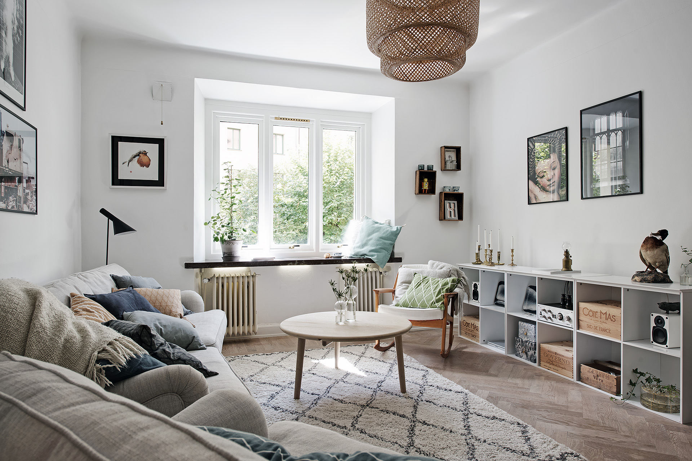

Poze, imagini, foto amenajari interioare | Ghid de amenajari interioare si decoratiuni interioare cu poze.
 Home Amenajari Interioare Amenajari Exterioare Faianta Gresie Parchet Rigips Poze, imagini, foto amenajari interioare Contact Design Interior Asigurari RCA Utile zugraveli-amenajari.roGhid de amenajari interioare si decoratiuni interioare cu poze.
Un site complet cu poze si idei despre amenajari interioare montaj rigips, gresie, faianta, scafe rigips. Stay updated via RSSMENU
Amenajari Interioare Amenajari Exterioare Rigips Gresie Faianta Parchet Poze, imagini, foto amenajari interioare zugraveli-amenajari.ro Design Interior Utile Asigurari RCA ContactArticole recente
Amenajari interioare baie si bucatarie Portofoliu clienti Service aer conditionat, montaj aer conditionat, incarcari cu freon. Cum influenteaza criza decoratiunile interioare Cum sa creezi un spatiu confortabil intr-un living mic Cum alegem culorile in amenajarile interioare?Blogroll
Amenajari Interioare Amenajari interioare si zugraveli Asigurari RCA online Maintenance in Ireland POZE amenajari interioare RCA IEFTIN World of Tanks Romania Zugraveli interioareUrmăreşte-mă pe Twitter
Twiturile meleUrmareste-ne prin Email
Poze, imagini, foto amenajari interioare
0Poze amenajari interioare, imagini amenajari interioare, foto amenajari interioare, idei de amenajari interioare, poze rigips, gresie, faianta, parchet, zugraveli, ce culori se poarta.
Realizam servicii de amenajari interioare, zugraveli, renovari, montaj rigips, gresie, faianta, parchet, scafe rigips, termoizolatii, instalatii electrice si sanitare.
TELEFON : 0727.522.446 0765.451.480
Această prezentare necesită JavaScript.
Partajează asta:
Twitter Facebook TumblrApreciază:
Apreciere Încarc...Lasă un răspuns Anulează răspunsul
Parteneri
etichete
aer conditionat alegerea culorilor amenajari exterioare Amenajari Interioare amenajari interioare rigips blocuri case constructii culori cum alegem culorile decoratiuni decoratiuni interioare decoratiuni rigips design interior faianta glet gresie incarcari freon instalatii electrice instalatii sanitare izolare blocuri izolatii lavabila living montaj aer conditionat montaj faianta montaj gresie montaj parchet montaj rigips montare parchet placari rigips placari rigips pe lemn pregatit pereti Preturi rigips rigips lemn scafe rigips service aer conditionat sufragerie tarif tarife tehnici montaj tencuiala termoizolatii zugraveli zugraveli interioare zugraviCreează gratuit un site web sau un blog la WordPress.com. %d blogeri au apreciat: